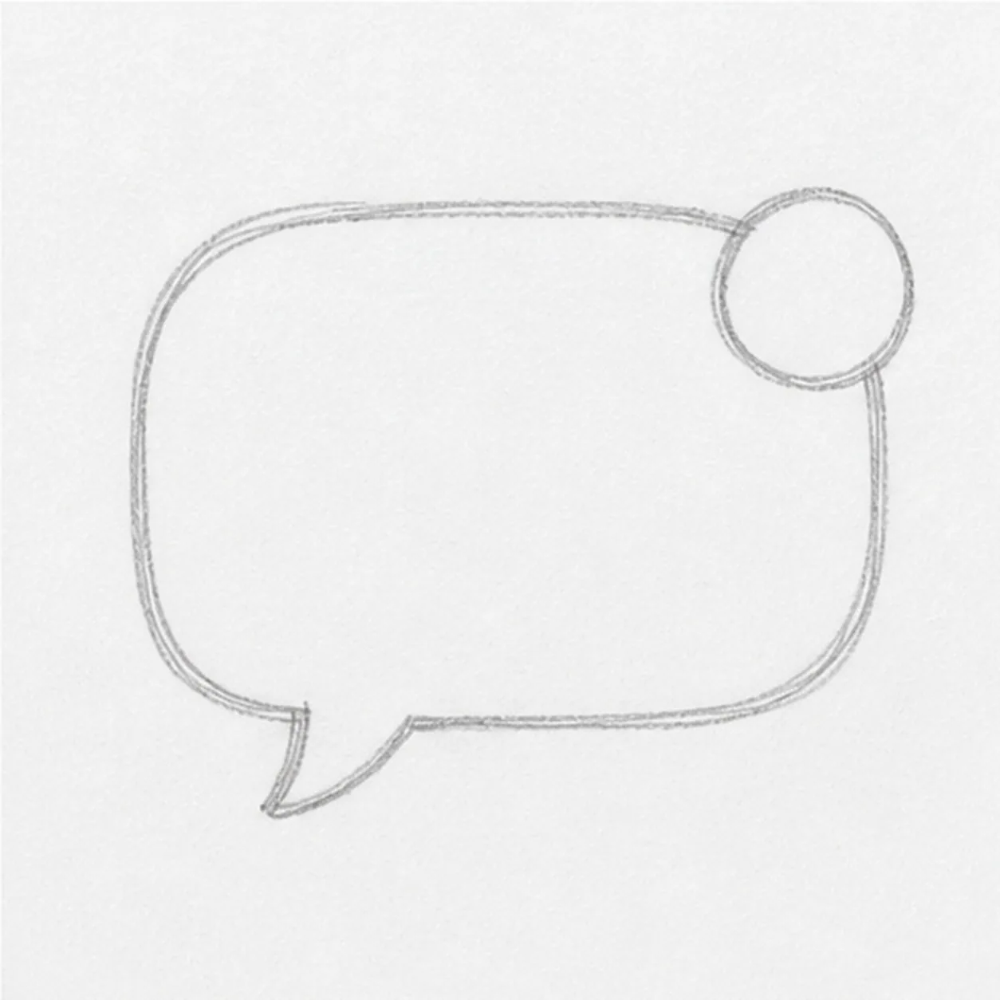
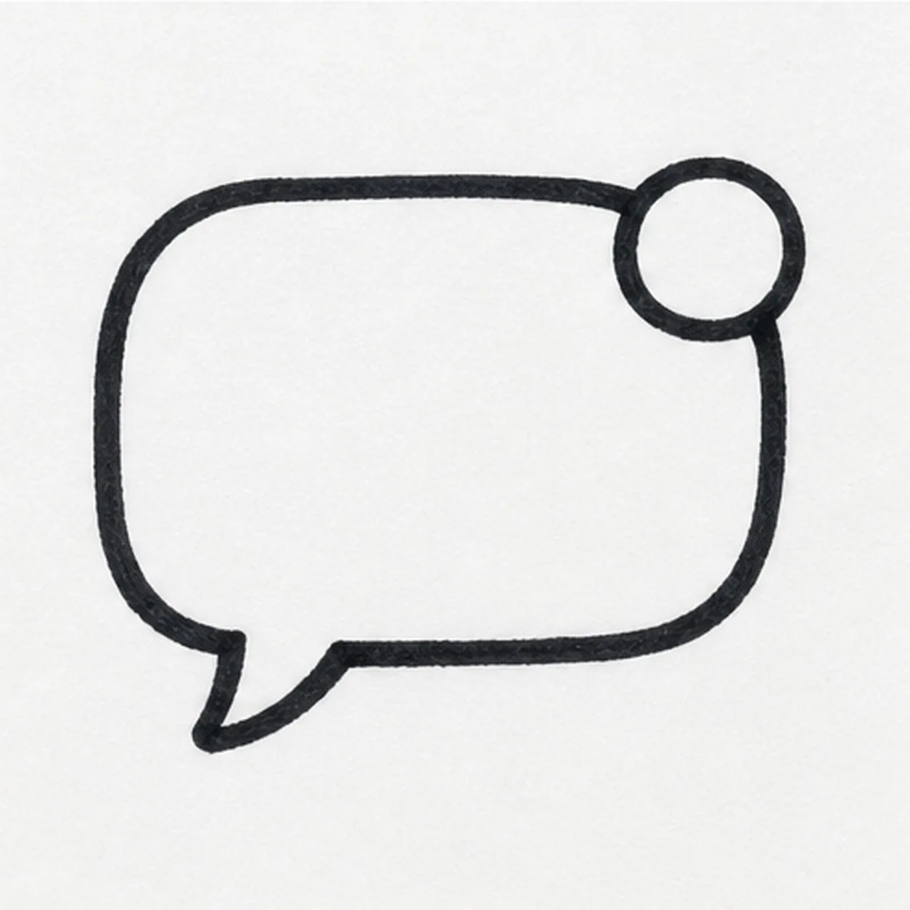

Felt-tip marker mode
Let's doodle a comic chat bubble
Treat this as one playful practice round: sketch the idea loosely, simplify the shapes, then commit with confident marker outlines and bright fills.
-
01

Round the bubble
Draw a wide rounded chat bubble with a little tail, then place a small circle badge on the upper corner.
Doodle tip: Keep the corners soft and roomy. The doodle needs space for a face and color.
-
02

Ink the bubble edge
Trace the bubble, tail, and badge with a thick black marker outline.
Doodle tip: Turn the paper as you draw the corners. A confident outline is the main personality of this doodle.
-
03
Add face and heart
Add two simple eyes, a small smile, and a heart inside the badge circle.
Doodle tip: Leave a little breathing room around the face so the bubble still feels like one clean shape.
-
04
Drop in the shadow
Add a gray offset shadow behind the lower and right edges of the bubble.
Doodle tip: Keep the shadow tucked close to the outline. A small shadow reads more like a sticker.
-
05
Fill the message colors
Fill the bubble with teal marker, color the heart pink, and add tiny white shine marks on the bubble and badge.
Doodle tip: Color in short strokes that follow the bubble shape. Visible marker streaks keep it handmade.
-
06

Send the final pop
Retrace the existing outline, smooth the teal and pink fills, and sharpen the face, heart, shadow, and shine marks already on the page.
Doodle tip: Do not add extra icons at the end. If you want a different badge symbol, choose it earlier and then make that version bolder here.